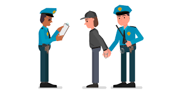

Description
The video provides essential guidance on how individuals with disabilities can navigate interactions with police officers in public or community settings. It covers what to expect during such encounters, tips on how to prepare in advance, and details on specific accommodations that can be requested to ensure a more accessible and fair interaction. The video aims to empower people with disabilities by informing them of their rights, helping them communicate effectively with law enforcement, and promoting safety and respect in these situations.
What to Do

You do not have to answer questions beyond identifying yourself. Police need probable cause or a warrant to search you or your property, unless you consent. If arrested, you have the right to remain silent until you speak with an attorney.
- You can record
- Remain Calm
- Ask whether you are free to leave
The Right to Remain Silent: What Does It Mean?
Miranda Rights: Police must inform you of your right to remain silent if you're arrested and about to be questioned.
- When to invoke your rights
- Even if you haven’t been formally arrested, you can choose to remain silent during questioning. It is your right to stop answering questions at any time.
- The legal limits
- In some states, you may need to provide identification, but you don’t need to answer questions beyond that.
- Your rights during arrest
- You have the right to remain silent and the right to an attorney. You do not have to answer any questions about the alleged crime.
For more information about how to stay vigilant, visit the ACLU page.